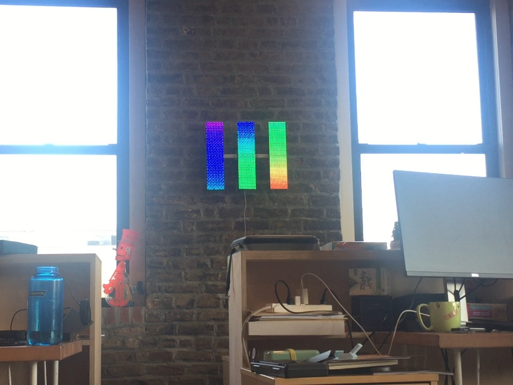

A few years ago, a former Tomorrow Lab intern led a really cool project that repurposed some LED matrix panels (the kind they use for Times Square news tickers or halal food carts) into an artistic, cloud connected data display. It was a truly end-to-end piece of digital artwork. A raspberry pi ran a small server that could accept inputs over the internet and configure three Teensy 3.0 boards, each of which would drive the display on one of the panels. The panels could display localized data like weather, color gradients, or a few other options. Over time, the display had stopped working, and none of the software it was running could be recovered. So I set about rebuilding it piece by piece.

I started by replacing the broken Teensy boards and rebuilding a set of commands on top of the PixelMatrix library that could draw or animate gradients or write text to the panels. With that done, I recreated from scratch a communication protocol between the Raspberry Pi and the Teensy boards by which the Pi could send serial messages, addressed to one of the three Teensies, that would be parsed on the Teensy side and interpreted as drawing commands. And lastly, I replaced the older Raspberry Pi and wifi attachment with the newer Model 3, which includes built-in wifi. I then put it back on line, recreated its small web page to accept basic text and configuration inputs, use Google and ForecastIO APIs to retrieve weather forecasts, and push this data to the panels.